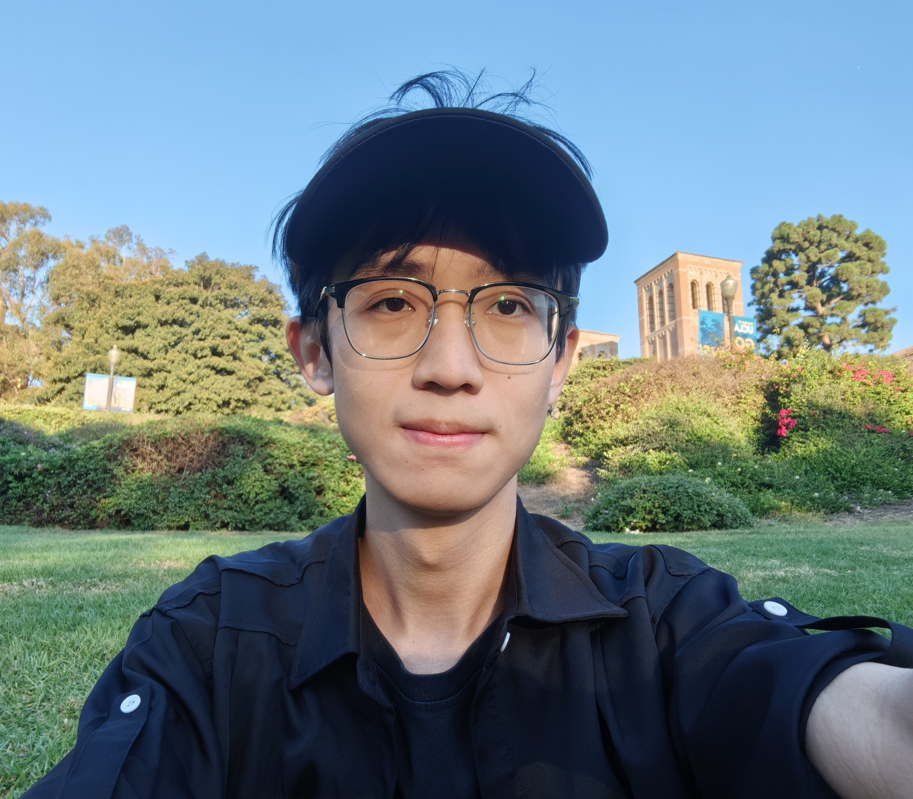

|
➤ I am a Master's student at University of California, Los Angeles (UCLA).
➤ I am currently working in PLUS Lab and UCLA NLP Lab in the Computer Science Department at UCLA, advised by Prof. Nanyun Peng. It is a privilege to work with many supportive and talented people in the lab.
➤ My research interests lie in LLMs, Retrieval-Augmented LMs, LVLMs.
CV /
Github /
Linkedin
|

|
Research Experience
-
University of California, Los Angeles
PLUS Lab, advised by Prof. Nanyun Peng.
■ Related fields:
LLMs, Retrieval-Augmented LMs, LVLMs
-
Institute of Automation, Chinese Academy of Science
National Laboratory of Pattern Recognition, advised by Prof. Shu Wu and Prof. Qiang Liu.
■ Related fields:
Data Mining, AI4Science, Diffusion Model
-
University of Science and Technology Beijing
Pattern Recognition Lab, advised by Prof. Xucheng Yin and Prof. Chun Yang.
■ Related fields:
Optical Character Recognition (OCR), CV, NLP
Education
-
MS, Electrical and Computer Engineering, University of California, Los Angeles,
2024–2026 (expected)
-
BS, Computer Science, University of Science and Technology Beijing, 2020–2024
-
National Scholarship of China (Awarded to 0.2% of students nationwide)
-
Champion's Scholarship (Awarded to Top 1/278 in CS department)
Awards
Scholarships
- National Scholarship of China (Awarded to 0.2% of students nationwide)
- Champion's Scholarship (Top 1 in CS department)
- University-Level First-Class Scholarship
Competition Awards
- National AI Board Game Tournament, National 2nd Prize
- MCM/ICM, Honorable Mention
- National Undergraduate Physics Competition, 1st Prize, Beijing Physics Society
- National Undergraduate Mathematics Competition, 1st Prize, Beijing Mathematics Society
|
{kind=link}